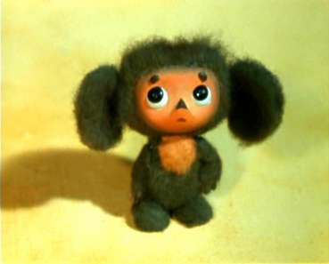

Profil Hero
Чебура́шка — персонаж, придуманный писателем Эдуардом Успенским в 1966 году как один из главных героев книги «Крокодил Гена и его друзья»
Чебура́шка — персонаж, придуманный писателем Эдуардом Успенским в 1966 году как один из главных героев книги «Крокодил Гена и его друзья»